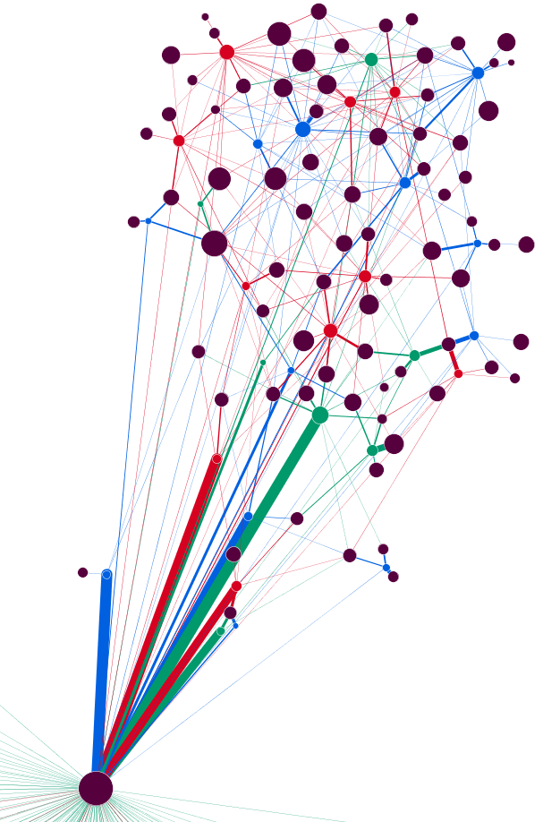
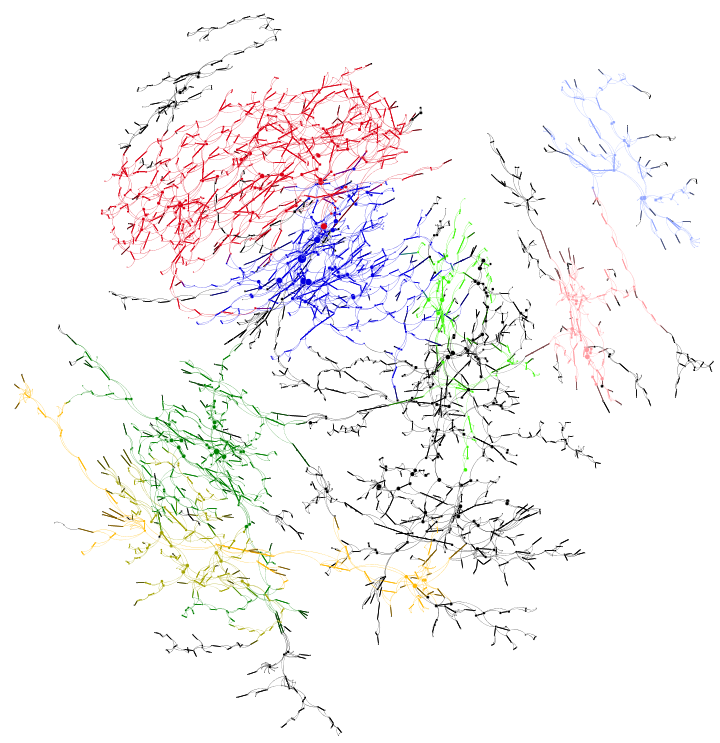
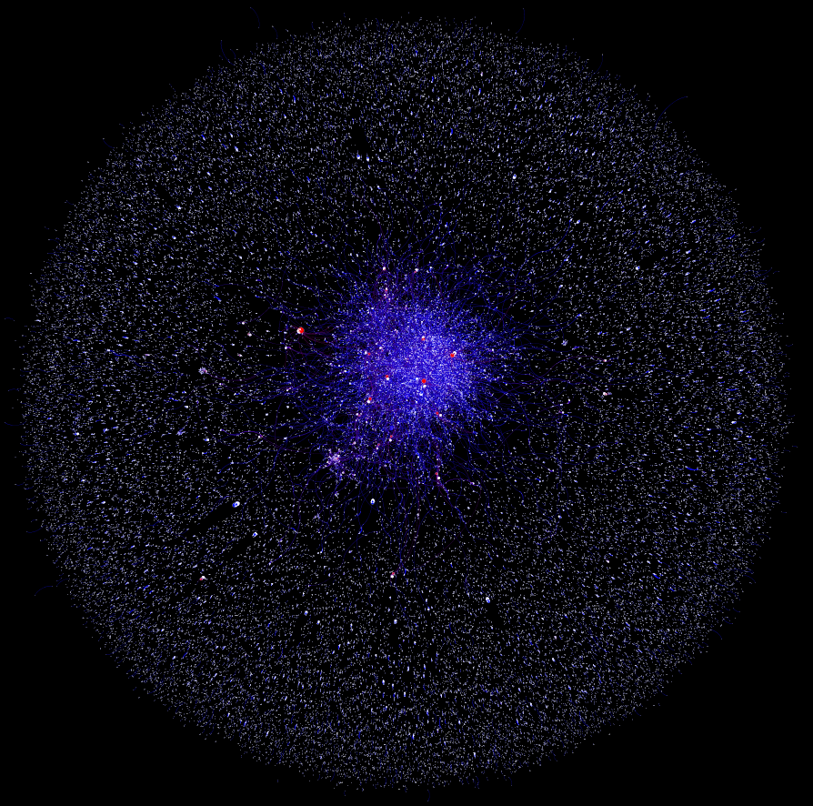
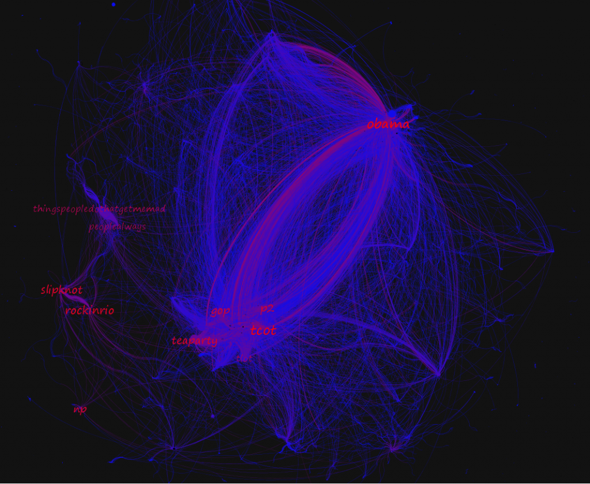
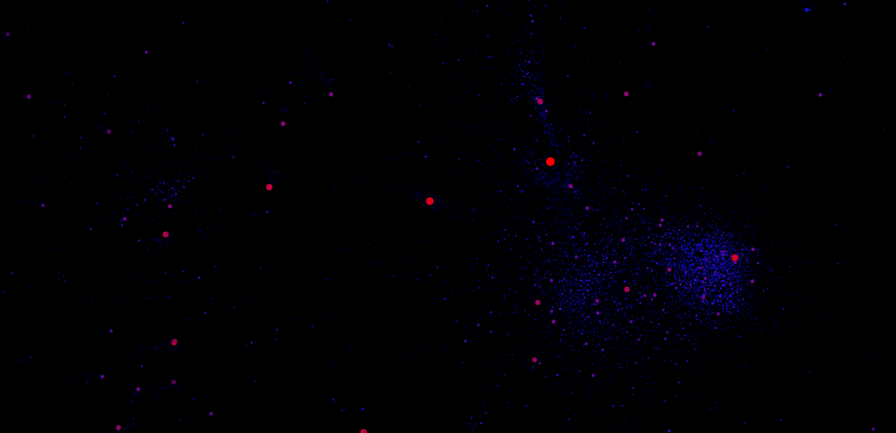

Hacking, it seems, is in the air. Dan Cohen has announced the edited version of Hacking the Academy, here at Stanford we’ve finished up with our Humanities Hackerspace experiment, and another Bay Area THATCamp (where I’ll be officially giving a course on Gephi and unofficially showing anyone who wants to how to integrate your spatial services into Drupal) looms on the horizon. And while officially fostered forms of hacking continue to meet with misunderstanding and mixed results in the humanities, I don’t think it’s a fad. In fact, it may be that the digital humanities can distinguish itself from the more engineering-oriented digital work by being fully invested in the hacker concept, rather than using it as a supplement to a more structured and curricula-based programming and development methodology. Here, I want to make that distinction as well, we in the humanities aren’t just hacking the code, we’re also making up our data analysis and software development strategies on the fly.
For myself, the real distinction between hacking and curricula-embedded research in the digital humanities comes in the difference between what is typically known as historical GIS (or spatial humanities) and humanities network analysis. The former is well-established and represented by a number of respected, credentialed scholars who have provided a detailed explanation of their methods, their successes and their failures. It is a field engaged in an ongoing discussion with the relationship between scholar and tool, typified by the problematization of GIS among both those who consider it to be a bad model for the humanities and those who continue to embrace it. Along with text analysis, it is one of the old men of the digital humanities, with archaic, pre-computer ancestors often pointed to. That meant I could take courses on it, read books on it, and learn about how the tools were designed, developed and used by other disciplines.
Networks, on the other hand, have been pure hacking for me. This is not to say I haven’t read any scholarship on network analysis, but primarily the scholarship comes after tool and code-oriented manipulation of network data. It’s only after I saw the difference in how betweenness centrality and eigenvector centrality were measured on a network of correspondence between 18th century European intellectuals that I finally felt the need to really understand what each measured. And for as many times as I looked up a paper, I looked up the actual code that ran the algorithm on some package (typically in the open-source Java code that makes up Gephi, though now I’ve used a few more scripting languages directly for my network manipulation and analysis).
Fueling this habit is the belief that the networks I represented are fundamentally influenced by my own decisions to format and organize the data. It’s easy to argue for the proper way to measure a citation network or a born-digital social network that only exists in one form. Contrast that with a network representing the makeup of the Catalogue of Life, or a network representation of the output of a topic model. What makes a connection between two people in a play or novel? That they appear in the same scene? That they speak to each other? That they share “significant” contact? And is a place or a thing a first-class citizen of your network, or simply an attribute?
Determining these connections drives the way in which networks are represented and measured. Kaleev Leetaru’s recent Culturomics 2.0 leans heavily on Gephi (as evidenced by the visual output and the citation of the Blondel algorithm that Gephi uses in its modularity analysis)–though the software itself is never mentioned. It’s a typical hacker project, with measured “sentiment” and network edges developed not from a born-digital attribute but based on colocation of place names within an article. One could offer up a few different, legitimate choices for how edges should be drawn besides the method Leetaru chose, and these would influence the resulting network analytics. Modularity analysis and geographic layouts show exciting possibilities that are not representations of Leetaru’s data but rather representations of his interpretation. And I think this is an important, healthy and positive distinction.


Here the network represented consists of nodes derived through community analysis of a genealogical network, with the modules connected by membership and the different modules determined through running the community analysis using all edges and then preferencing particular types of family connections such that we see how geneal groups are made up of differing lineal, ancestral and matrimonial communities.


The same concept as above, except here the modules are represented as whole collections of original nodes and edges, four modules in total, with the largest constituent sub-modules shown in various colors. Notice, though, that these submodules are not nested within parents but rather re-organizations of the network based on different edge decisions.
There is no “right” network representation of a database or twitter hashtags or even imperial Roman roads and there is no “correct” visualization of such networks. There is only an interpretation of how such networks could exist, but actually exist and not simply could be best represented as a heuristic. Network analysis is an exciting tool for research in the humanities, and amenable to a wide variety of relationships between a wide variety of entities, but its integration into the humanities is going to require hacking, to hack existing humanities data into the network model, to hack analytics into giving interesting measurements of that data and a constant, playful wariness that is invested in every new exploration, to understand the magisterial nature of humanities networks and how they are embedded in interpretation.


The organization of a network of tweets if one determines an edge to be drawn from a tweet to the URL it references.


The organization of the same network as above if instead the edge is drawn from tweet to hashtag


The organization of a twitter network if the edge is drawn from one user to a user referenced in their tweets. Edges have been turned off to show neighborhoods. Of course, with such a large network, sometimes one will end up with "optical neighbors" which like optical binaries in astronomy may appear to be neighbors but actually are quite distant.
To be clear, it’s not that network analysis can only be approached through hacking and that text or spatial analysis will always be more amenable to curricula. I think more than anything this is a representation of my own changing preferences, and I will often look at the code of some spatial analytical tool before trying to find scholarship about its use, and try it out and test it on various spatial datasets rather than find out what the “best practices” are for that tool. Similarly, I don’t do nearly as much text analysis as network and spatial, and what little I’ve done has been almost entirely hacker-oriented, despite there being many fine pieces of literature on how to do that right. It’s my hope, though, that networks, being so primitive in their form, are embraced for their interpretive nature, something I equate to hacking, because somehow I think hacking and interpretation are aligned well together and fit into an aesthetic and qualitative approach to knowledge. It’s rough, and fuzzy, and something humanists should be comfortable with.